linux笔记
参考视频：黑马程序员Linux
linux笔记配置:WSL1.lsls [-a -l -h] [Linux路径]-a表示显示隐藏文件-l表示以列表(竖向排列方式)展示内容,并展示更多信息-l和-a可以共用-h用易于阅读的方式列出文件大小,如K,M,G2.cd和pwd命令3.相对路径和绝对路径和特殊路径符4.mkdir创建目录5.文件操作命令touch,cat,more6.cp复制,mv移动,rm删除命令cp命令:mv命令rm命令7.查找命令which和find通配符find命令按照大小查找passwd修改密码8.grep和wc和管道符grep命令过滤文件内容wc命令统计内容数量(统计文件信息)管道符的概念和使用9.echo-tail-重定向符使用echo命令输出内容反引号ˋ的使用重定向符号的使用tail命令跟踪文件更改10. VI编辑器11.root用户su和exit命令sudo命令12. 用户和用户组用户组管理用户管理13.查看权限控制信息14.chmod命令修改权限信息权限的数字序号chown命令修改所属用户15.linux各类小技巧快捷键ctrl + c 强制停止ctrl+d退出或登出history查看历史命令ctrl+r历史命令搜索光标移动快捷键ctrl+L清屏16.软件安装yum进行软件安装(centOS)apt进行软件安装(Ubuntu,debian)17.systemctl控制软件启动关闭18.ln软链接(快捷方式)19.日期和时区date 命令查看日期时间修改linux系统的时区手动使用ntp进行时间同步和校准20.IP地址和主机名IP地址特殊IP地址主机名修改主机名域名解析21.配置linux固定IP地址为什么需要固定IP21.网络请求和下载1.掌握使用ping命令检查服务器是否可联通2.掌握使用wget命令下载文件3.掌握使用curl命令发起网络请求22.端口23.进程关闭进程24.主机状态监控top查看系统资源占用top命令选项top交互式选项df磁盘信息监控iostat命令sar命令25.环境变量环境变量：PATH$符号自行设置环境变量自定义环境变量PATH26.上传和下载rz,sz命令27.压缩文件tar命令压缩解压zip命令压缩unzip命令解压
配置:WSL
WSL(windows subsystem for Linux)
使用WSL获得Ubuntu系统环境
WSL作为Windows10系统带来的全新特性，正在逐步颠覆开发人员既有的选择。
- 传统方式获取Linux操作系统环境，是安装完整的虚拟机，如VMware
- 使用WSL，可以以非常轻量化的方式，得到Linux系统环境
目前,开发者正在逐步抛弃以虚拟机的形式获取Linux系统环境,而在逐步拥抱WSL环境。
所以，课程也紧跟当下趋势，为同学们讲解如何使用WSL，简单、快捷的获得Linux系统环境。
所以，为什么要用WSL，其实很简单：
- 开发人员都在用，大家都用的，我们也要学习
- 实在是太方便了，简单、好用、轻量化、省内存
1.ls
list show
ls [-a -l -h] [Linux路径]
1[hahahashmap-linux@localhost ~]$ ls /2bin boot dev etc home lib lib64 media mnt opt proc root run sbin srv sys tmp usr var
-a表示显示隐藏文件
.点开头的文件默认隐藏
[hahahashmap-linux@localhost ~]$ ls -a . .. .bash_history .bash_logout .bash_profile .bashrc .cache .config .dbus Desktop Documents Downloads .esd_auth .ICEauthority .local .mozilla Music Pictures .pki Public Templates Videos
-l表示以列表(竖向排列方式)展示内容,并展示更多信息
[hahahashmap-linux@localhost ~]$ ls -l total 0 drwxr-xr-x. 2 hahahashmap-linux hahahashmap-linux 6 May 26 07:01 Desktop drwxr-xr-x. 2 hahahashmap-linux hahahashmap-linux 6 May 26 07:01 Documents drwxr-xr-x. 2 hahahashmap-linux hahahashmap-linux 6 May 26 07:01 Downloads drwxr-xr-x. 2 hahahashmap-linux hahahashmap-linux 6 May 26 07:01 Music drwxr-xr-x. 2 hahahashmap-linux hahahashmap-linux 6 May 26 07:01 Pictures drwxr-xr-x. 2 hahahashmap-linux hahahashmap-linux 6 May 26 07:01 Public drwxr-xr-x. 2 hahahashmap-linux hahahashmap-linux 6 May 26 07:01 Templates drwxr-xr-x. 2 hahahashmap-linux hahahashmap-linux 6 May 26 07:01 Videos
-l和-a可以共用
xxxxxxxxxx31ls -l -a2ls -la3ls -al
[hahahashmap-linux@localhost ~]$ ls -la total 32 drwx------. 16 hahahashmap-linux hahahashmap-linux 4096 May 27 03:27 . drwxr-xr-x. 3 root root 23 May 26 06:59 .. -rw-------. 1 hahahashmap-linux hahahashmap-linux 51 May 27 03:53 .bash_history -rw-r--r--. 1 hahahashmap-linux hahahashmap-linux 18 Oct 30 2018 .bash_logout -rw-r--r--. 1 hahahashmap-linux hahahashmap-linux 193 Oct 30 2018 .bash_profile -rw-r--r--. 1 hahahashmap-linux hahahashmap-linux 231 Oct 30 2018 .bashrc drwx------. 17 hahahashmap-linux hahahashmap-linux 4096 May 26 07:09 .cache drwxr-xr-x. 14 hahahashmap-linux hahahashmap-linux 261 May 26 07:01 .config drwx------. 3 hahahashmap-linux hahahashmap-linux 25 May 26 07:01 .dbus drwxr-xr-x. 2 hahahashmap-linux hahahashmap-linux 6 May 26 07:01 Desktop drwxr-xr-x. 2 hahahashmap-linux hahahashmap-linux 6 May 26 07:01 Documents drwxr-xr-x. 2 hahahashmap-linux hahahashmap-linux 6 May 26 07:01 Downloads -rw-------. 1 hahahashmap-linux hahahashmap-linux 16 May 26 07:01 .esd_auth -rw-------. 1 hahahashmap-linux hahahashmap-linux 934 May 27 03:27 .ICEauthority drwx------. 3 hahahashmap-linux hahahashmap-linux 19 May 26 07:01 .local drwxr-xr-x. 6 hahahashmap-linux hahahashmap-linux 81 May 26 07:02 .mozilla drwxr-xr-x. 2 hahahashmap-linux hahahashmap-linux 6 May 26 07:01 Music drwxr-xr-x. 2 hahahashmap-linux hahahashmap-linux 6 May 26 07:01 Pictures drwxrw----. 3 hahahashmap-linux hahahashmap-linux 19 May 26 07:08 .pki drwxr-xr-x. 2 hahahashmap-linux hahahashmap-linux 6 May 26 07:01 Public drwxr-xr-x. 2 hahahashmap-linux hahahashmap-linux 6 May 26 07:01 Templates drwxr-xr-x. 2 hahahashmap-linux hahahashmap-linux 6 May 26 07:01 Videos
[hahahashmap-linux@localhost ~]$ ls -la /
total 24
dr-xr-xr-x. 17 root root 224 May 26 06:58 .
dr-xr-xr-x. 17 root root 224 May 26 06:58 ..
lrwxrwxrwx. 1 root root 7 May 26 06:42 bin -> usr/bin
dr-xr-xr-x. 5 root root 4096 May 27 02:42 boot
drwxr-xr-x. 19 root root 3280 May 27 03:26 dev
drwxr-xr-x. 143 root root 8192 May 27 03:26 etc
drwxr-xr-x. 3 root root 23 May 26 06:59 home
lrwxrwxrwx. 1 root root 7 May 26 06:42 lib -> usr/lib
lrwxrwxrwx. 1 root root 9 May 26 06:42 lib64 -> usr/lib64
drwxr-xr-x. 2 root root 6 Apr 10 2018 media
drwxr-xr-x. 2 root root 6 Apr 10 2018 mnt
drwxr-xr-x. 3 root root 16 May 26 06:49 opt
dr-xr-xr-x. 225 root root 0 May 27 03:26 proc
dr-xr-x---. 3 root root 151 May 26 07:00 root
drwxr-xr-x. 41 root root 1260 May 27 03:28 run
lrwxrwxrwx. 1 root root 8 May 26 06:42 sbin -> usr/sbin
drwxr-xr-x. 2 root root 6 Apr 10 2018 srv
dr-xr-xr-x. 13 root root 0 May 27 03:26 sys
drwxrwxrwt. 20 root root 4096 May 27 03:53 tmp
drwxr-xr-x. 13 root root 155 May 26 06:42 usr
drwxr-xr-x. 21 root root 4096 May 26 07:00 var
-h用易于阅读的方式列出文件大小,如K,M,G
-h必须搭配-l使用
[hahahashmap-linux@localhost ~]$ ls -lh /
total 24K
lrwxrwxrwx. 1 root root 7 May 26 06:42 bin -> usr/bin
dr-xr-xr-x. 5 root root 4.0K May 27 02:42 boot
drwxr-xr-x. 19 root root 3.3K May 27 03:26 dev
drwxr-xr-x. 143 root root 8.0K May 27 03:26 etc
drwxr-xr-x. 3 root root 23 May 26 06:59 home
lrwxrwxrwx. 1 root root 7 May 26 06:42 lib -> usr/lib
lrwxrwxrwx. 1 root root 9 May 26 06:42 lib64 -> usr/lib64
drwxr-xr-x. 2 root root 6 Apr 10 2018 media
drwxr-xr-x. 2 root root 6 Apr 10 2018 mnt
drwxr-xr-x. 3 root root 16 May 26 06:49 opt
dr-xr-xr-x. 230 root root 0 May 27 03:26 proc
dr-xr-x---. 3 root root 151 May 26 07:00 root
drwxr-xr-x. 41 root root 1.3K May 27 03:28 run
lrwxrwxrwx. 1 root root 8 May 26 06:42 sbin -> usr/sbin
drwxr-xr-x. 2 root root 6 Apr 10 2018 srv
dr-xr-xr-x. 13 root root 0 May 27 03:26 sys
drwxrwxrwt. 20 root root 4.0K May 27 03:53 tmp
drwxr-xr-x. 13 root root 155 May 26 06:42 usr
drwxr-xr-x. 21 root root 4.0K May 26 07:00 var
2.cd和pwd命令
cd:change directory
cd [linux路径]
- cd不需要选项,只有参数,表示要切换到哪个目录
- cd命令直接执行,不写参数,表示回到用户的home目录
[hahahashmap-linux@localhost ~]$ ls
Desktop Documents Downloads Music Pictures Public Templates Videos
[hahahashmap-linux@localhost ~]$ cd /
[hahahashmap-linux@localhost /]$ ls
bin boot dev etc home lib lib64 media mnt opt proc root run sbin srv sys tmp usr var
[hahahashmap-linux@localhost /]$ cd
[hahahashmap-linux@localhost ~]$ ls
Desktop Documents Downloads Music Pictures Public Templates Videos
pwd=print work directory
通过ls来验证当前工作目录是不恰当的
可以通过pwd命令查看当前所在的工作目录
[hahahashmap-linux@localhost ~]$ pwd /home/hahahashmap-linux [hahahashmap-linux@localhost ~]$ cd / [hahahashmap-linux@localhost /]$ pwd / [hahahashmap-linux@localhost /]$ cd /bin [hahahashmap-linux@localhost bin]$ pwd /bin
3.相对路径和绝对路径和特殊路径符
cd /home/hahahashmap-linux/Desktop是绝对路径cd Desktop是相对路径
返回上一级
特殊路径符
.表示当前目录cd ./Desktop表示切换到当前目录下的Desktop目录内,和cd Desktop效果一致..表示上一级目录,例如cd ../..切换到上二级目录~表示HOME目录,例如cd ~/Desktop切换到HOME内的Desktop目录
4.mkdir创建目录
mkdir==Make Directory
语法:mkdir [-p] Linux路径
Linux路径可用绝对路径和相对路径
-p选项可选,表示自动创建不存在的父目录,适用于创建连续多层级的目录
[hahahashmap-linux@localhost ~]$ mkdir test01 [hahahashmap-linux@localhost ~]$ ls Desktop Documents Downloads Music Pictures Public Templates test01 Videos
[hahahashmap-linux@localhost ~]$ mkdir -p ./test01/01/02/03
注意:创建文件夹需要修改权限,只能在home目录内进行,涉及到权限问题,home外无法成功
[hahahashmap-linux@localhost test01]$ mkdir /mytest mkdir: cannot create directory ‘/mytest’: Permission denied
5.文件操作命令touch,cat,more
touch创建文件
touch Linux路径
touch命令无选项,参数必填,表示要创建的文件路径,相对,绝对,特殊路径符均可以使用
[hahahashmap-linux@localhost test01]$ ls 01 20230528 [hahahashmap-linux@localhost test01]$ touch test.txt [hahahashmap-linux@localhost test01]$ ls 01 20230528 test.txt
linux中文件一般为黑色,文件夹为蓝色
cat,more查看文件内容
cat linux路径 cat没有选项,只有必填参数,参数表示被查看的文件路径,相对,绝对,特殊路径符都可以使用
Ctrl +L可以清空屏幕
[hahahashmap-linux@localhost test01]$ ls
01 20230528 test.txt
[hahahashmap-linux@localhost test01]$ cat test.txt
#include<iostream>
using namespace std;
int main()
{
cout<<"hello world!"<<endl;
return 0;
}
more命令可以查看文件内容,与cat不同的是:
- cat是直接将内容全部显示出来
- more支持翻页,如果文件内容过多,可以一页页地展示
可以尝试查看more /etc/services
空格翻页,q退出查看
6.cp复制,mv移动,rm删除命令
cp命令:
cp [-r] 参数1 参数2
-r选项可选,用于复制文件夹使用,表示递归
参数1,Linux路径,表示被复制的文件或文件夹
参数2,Linux路径,表示要复制去的地方
[hahahashmap-linux@localhost test01]$ ls 01 20230528 test.txt [hahahashmap-linux@localhost test01]$ cp test.txt test2.txt [hahahashmap-linux@localhost test01]$ ls 01 20230528 test2.txt test.txt
[hahahashmap-linux@localhost test01]$ ls 01 20230528 test2.txt test.txt [hahahashmap-linux@localhost test01]$ cp -r 01 01cpy [hahahashmap-linux@localhost test01]$ ls 01 01cpy 20230528 test2.txt test.txt
mv命令
mv命令来自move
mv 参数1 参数2 没有可选的选项
参数1表示被移动的文件或文件夹
参数2表示要移动去的地方,如果目标不存在,则进行改名,确保目标存在
[hahahashmap-linux@localhost test01]$ ls 01 01cpy 20230528 test2.txt test.txt [hahahashmap-linux@localhost test01]$ mv test.txt 01/02/ [hahahashmap-linux@localhost test01]$ cd 01/02 [hahahashmap-linux@localhost 02]$ ls 03 test.txt
mv可以用于改名
[hahahashmap-linux@localhost Desktop]$ ls test3.txt [hahahashmap-linux@localhost Desktop]$ mv test3.txt test.txt [hahahashmap-linux@localhost Desktop]$ ls test.txt
移动文件夹
[hahahashmap-linux@localhost Desktop]$ mv ../test01/01 .
rm命令
rm来自单词remove
rm [-r -f] 参数1 参数2 参数3 ....
同cp命令一样,-r选项用于删除文件夹
-f表示force,强制删除(不会弹出提示确认信息)
- 普通用户删除内容不会弹出提示,只有root管理员用户删除内容会有提示
- 所以一般用户用不到-f选项
参数1,参数2,参数3.....表示要删除的文件或1文件夹路径,用空格分开
[hahahashmap-linux@localhost Desktop]$ ls 01 test01.txt test.txt [hahahashmap-linux@localhost Desktop]$ rm test.txt [hahahashmap-linux@localhost Desktop]$ ls 01 test01.txt
rm支持通配符*,用来模糊匹配
- test*匹配任何以test开头的内容
- *test匹配任何以test结尾的内容
*test*表示匹配任何包含test的内容
可以通过su - root,并输入密码123456(和普通用户默认一样)临时切换到root用户体验
通过输入exit命令,退回普通用户(临时用root,用完记得退出)
[root@localhost test01]# ls 01cpy 20230528 test1.txt test2.txt test3.txt [root@localhost test01]# rm test1.txt rm: remove regular file ‘test1.txt’? y [root@localhost test01]# ls 01cpy 20230528 test2.txt test3.txt
7.查找命令which和find
xxxxxxxxxx21hahahashmap@debian:~$ which pwd2/usr/bin/pwd[hahahashmap-linux@localhost ~]$ which pwd /usr/bin/pwd
cd,pwd等命令相当于二进制程序，可以用which命令找到它们文件的存放地址
which只针对 命令 的程序文件查找
find用于按文件名查找文件，语法：
find 起始路径 -name "被查找文件名"
为了在整个系统进行搜索，要切换到root用户获得管理员权限su - root或su root(亲测可行)
su命令意思是switch user
在根目录查找名字为test的文件
xxxxxxxxxx41root@debian:/home/hahahashmap# find / -name "test"2/usr/lib/python3.11/test3/usr/bin/test4root@debian:/home/hahahashmap#
[hahahashmap-linux@localhost ~]$ su root Password: [root@localhost hahahashmap-linux]# find / -name "test" find: ‘/run/user/1000/gvfs’: Permission denied /usr/bin/test /usr/lib/modules/3.10.0-957.el7.x86_64/kernel/drivers/ntb/test /usr/lib/alsa/init/test /usr/lib64/python2.7/test /usr/lib64/python2.7/unittest/test /usr/share/espeak-data/voices/test /usr/src/kernels/3.10.0-957.el7.x86_64/drivers/ntb/test /usr/src/kernels/3.10.0-957.el7.x86_64/include/config/test /usr/src/kernels/3.10.0-957.el7.x86_64/lib/raid6/test
通配符
使用通配符*来做模糊查询
test*匹配任何以test开头的内容
*test匹配任何以test结尾的内容
*test*匹配任何包含test的内容
[root@localhost ~]# find / -name "*test"
......
find命令按照大小查找
find 起始路径 -size +|-n [kMG]
+,-表示大于和小于
n表示大小数字
kMG表示大小单位, k(小写字母)表示kB , M表示MB, G表示GB
查找小于10kB的文件:find / -size -10k
查找大于100MB的文件:find / -size +100M
查找大于1GB的文件:find / -size +1G
注: 文件很多输出不停 , 用快捷键ctrl+C可以强制停止输出`
passwd修改密码
在root用户下
passwd修改root密码
passwd hahahashmap-linux修改用户hahahashmap-linux的密码
8.grep和wc和管道符
grep命令过滤文件内容
grep [-n] 关键字 文件路径
- -n 可选,表示在结果中显示匹配的行的行号
- 参数,关键字,必填,表示过滤的关键字, 带有空格或其他特殊符号,建议使用“ ”将关键字包围起来
- 参数,文件路径,必填,表示要过滤的内容的文件路径,可作为内容输入端口
[hahahashmap-linux@localhost ~]$ cat test.txt 114514 1919810 itheima is a brand of itcast itcast stock code is 003032 [hahahashmap-linux@localhost ~]$ grep "itheima" test.txt itheima is a brand of itcast [hahahashmap-linux@localhost ~]$ grep "itcast" test.txt itheima is a brand of itcast itcast stock code is 003032 [hahahashmap-linux@localhost ~]$ grep -n "code" test.txt 3:itcast stock code is 003032
wc命令统计内容数量(统计文件信息)
可以通过wc命令统计文件的行数、单词数量等
语法: wc [-c -m -l -w] 文件路径
- 选项，-c，统计bytes数量
- 选项, -m，统计字符数量
- 选项，-l，统计行数
- 选项，-w，统计单词数量
- 参数，文件路径，被统计的文件，可作为内容输入端口
[hahahashmap-linux@localhost ~]$ cat test.txt 114514 1919810 itheima is a brand of itcast itcast stock code is 003032 [hahahashmap-linux@localhost ~]$ wc test.txt 3 13 72 test.txt
3表示行数 13表示单词数量(按照空格划分) 59字节数
包含选项:
[hahahashmap-linux@localhost ~]$ wc -c test.txt 72 test.txt [hahahashmap-linux@localhost ~]$ wc -m test.txt 72 test.txt [hahahashmap-linux@localhost ~]$ wc -l test.txt 3 test.txt [hahahashmap-linux@localhost ~]$ wc -w test.txt 13 test.txt
管道符的概念和使用
管道符：|
管道符的含义是:将管道符左边命令的结果,作为右边命令的输入
[hahahashmap-linux@localhost ~]$ grep itheima test.txt itheima is a brand of itcast [hahahashmap-linux@localhost ~]$ cat test.txt | grep itheima itheima is a brand of itcast [hahahashmap-linux@localhost ~]$ cat test.txt | wc -l 3
[hahahashmap-linux@localhost ~]$ ls Desktop Documents Downloads Music Pictures Public Templates test01 test.txt Videos [hahahashmap-linux@localhost ~]$ ls | grep test test01 test.txt
管道符可以嵌套
[hahahashmap-linux@localhost ~]$ cat test.txt | grep itcast itheima is a brand of itcast itcast stock code is 003032 [hahahashmap-linux@localhost ~]$ cat test.txt | grep itcast | grep itheima itheima is a brand of itcast
9.echo-tail-重定向符
使用echo命令输出内容
可以使用echo命令在命令行内输出指定内容
语法：echo 输出的内容
无需选项，只有一个参数，表示要输出的内容，复杂内容可以用“ ”包围
演示：在终端上显示： Hello Linux
[hahahashmap-linux@localhost ~]$ echo "Hello Linux" Hello Linux
带有空格或 \ 等特殊符号，建议使用双引号包围
因为不包围的话，空格后很容易被识别为参数2，尽管echo不受影响，但是要养成习惯哦
[hahahashmap-linux@localhost ~]$ echo Hello Linux Hello Linux
反引号ˋ的使用
看一下如下命令:echo pwd
[hahahashmap-linux@localhost ~]$ echo pwd pwd
本意是想，输出当前的工作路径，但是pwd被作为普通字符输出了。
我们可以通过将命令用反引号（通常也称之为飘号)`将其包围
被`包围的内容，会被作为命令执行，而非普通字符
[hahahashmap-linux@localhost ~]$ echo `pwd` /home/hahahashmap-linux
重定向符号的使用
两个特殊符号，重定向符： >和>>
>,将左侧命令的结果，覆盖写入到符号右侧指定的文件中>>，将左侧命令的结果，追加写入到符号右侧指定的文件中
示例1: > 覆盖内容
[hahahashmap-linux@localhost ~]$ cat test.txt 114514 1919810 [hahahashmap-linux@localhost ~]$ echo "hello linux" > test.txt [hahahashmap-linux@localhost ~]$ cat test.txt hello linux
示例2: >> 追加内容
[hahahashmap-linux@localhost ~]$ echo "114514 1919810" >> test.txt [hahahashmap-linux@localhost ~]$ cat test.txt hello linux 114514 1919810
[hahahashmap-linux@localhost ~]$ ls >> test.txt [hahahashmap-linux@localhost ~]$ cat test.txt hello linux 114514 1919810 Desktop Documents Downloads Music Pictures Public Templates test01 test.txt Videos
tail命令跟踪文件更改
使用tail命令，可以查看文件尾部内容，跟踪文件的最新更改，语法如下：
tail [-f -num] Linux路径
参数，Linux路径，表示被跟踪的文件路径
选项，-f，表示持续跟踪文件的最新更改(follow)
(这个程序不会自动结束,如果在文件尾部追加内容,屏幕上会自动更新文件的内容)
快捷键
Ctrl+C可以停止该命令的执行选项，-num，表示，查看尾部多少行，不填默认10行
[hahahashmap-linux@localhost ~]$ ls > test.txt [hahahashmap-linux@localhost ~]$ ls / >>test.txt [hahahashmap-linux@localhost ~]$ tail test.txt opt proc root run sbin srv sys tmp usr var
只看5行:
[hahahashmap-linux@localhost ~]$ tail -5 test.txt srv sys tmp usr var
10. VI编辑器
vi\vim编辑器介绍
vi\vim是visual interface的简称，是Linux中最经典的文本编辑器
同图形化界面中的文本编辑器一样,vi是命令行下对文本文件进行编辑的绝佳选择。
vim 是 vi 的加强版本，兼容 vi 的所有指令，不仅能编辑文本，而且还具有 shell 程序编辑的功能，可以不同颜色的字体来辨别语法的正确性，极大方便了程序的设计和编辑性。
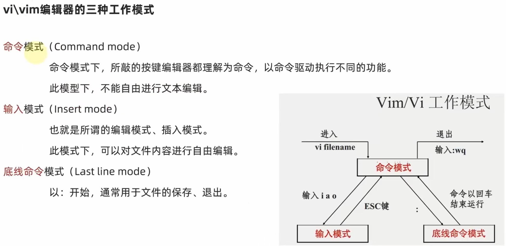
命令模式
如果需要通过vi/vim编辑器编辑文件，请通过如下命令：
vi 文件路径
vim 文件路径
vim兼容全部的vi功能，后续全部使用vim命令
- 如果文件路径表示的文件不存在，那么此命令会用于编辑新文件
- 如果文件路径表示的文件存在，那么此命令用于编辑已有文件
通过vi/vim命令编辑文件，会打开一个新的窗口，此时这个窗口就是：命令模式窗口
命令模式是vi编辑器的入口和出口，如上图
- 进入vi编辑器会进入命令模式
- 通过命令模式输入键盘指令，可以进入输入模式
- 输入模式需要退回到命令模式,然后通过命令可以进入底线命令模式
在命令模式下
- 按两次y,再按一次p,可以复制粘贴当前行
- 按两次d,可以删除当前行
- 按一次u,可以撤销
退出时输入wq , w表示保存 , q表示退出
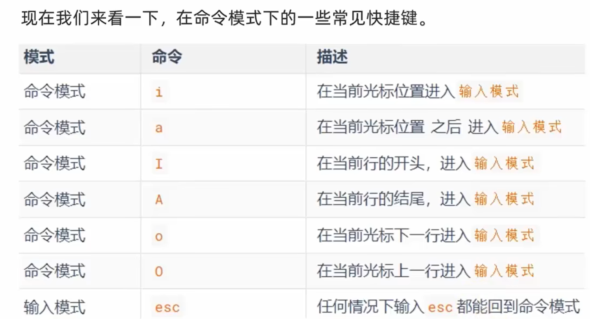
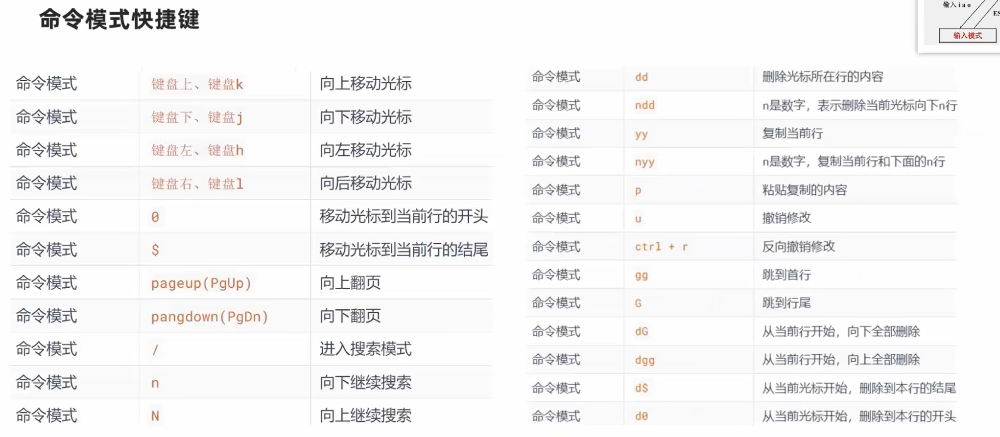
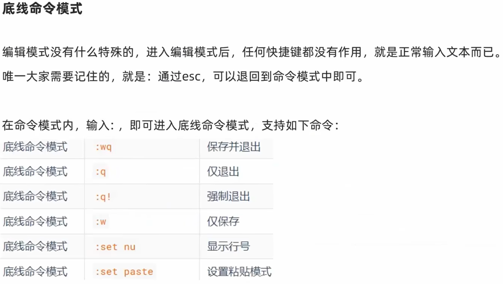
:set paste 开启时 可以保证在输入模式粘贴时格式不错乱
11.root用户
root用户（超级管理员）
无论是Windows、MacoS、Linux均采用多用户的管理模式进行权限管理。
在Linux系统中,拥有最大权限的账户名为: root (超级管理员)
而在前期,我们一直使用的账户是普通的用户:hahahashmap-linux
普通用户的权限，一般在其HOME目录内是不受限的
一旦出了HOME目录,大多数地方,普通用户仅有只读和执行权限,无修改权限
su和exit命令
在前面，我们接触过su命令切换到root账户。
su命令就是用于账户切换的系统命令,其来源英文单词： Switch User
语法：su [-] [用户名]
-符号是可选的,表示是否在切换用户后加载环境变量(后续讲解),建议带上- 参数：用户名，表示要切换的用户,用户名也可以省略,省略表示切换到root
- 切换用户后，可以通过
exit或logout命令退回上一个用户，也可以使用快捷键：ctrl +d - 使用普通用户，切换到其它用户需要输入密码，如切换到root用户
- 使用root用户切换到其它用户，无需密码，可以直接切换
sudo命令
在我们得知root密码的时候，可以通过su命令切换到root得到最大权限。
但是我们不建议长期使用root用户，避免带来系统损坏。
我们可以使用sudo命令，为普通的命令授权，临时以root身份执行。
语法： sudo 其它命令
在其它命令之前，带上sudo，即可为这一条命令临时赋予root授权
但是并不是所有的用户，都有权利使用sudo,我们需要为普通用户配置sudo认证
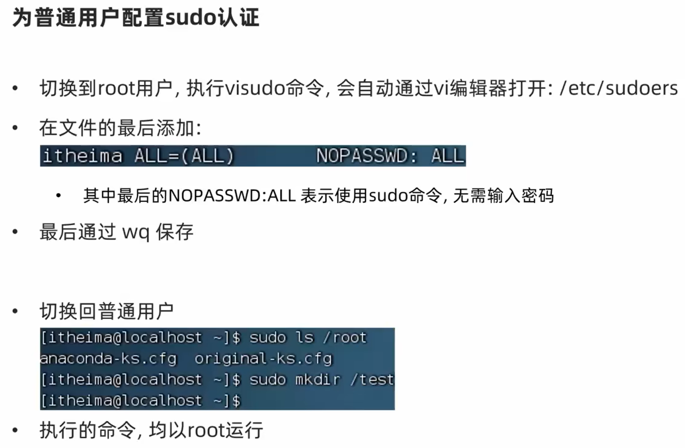
12. 用户和用户组
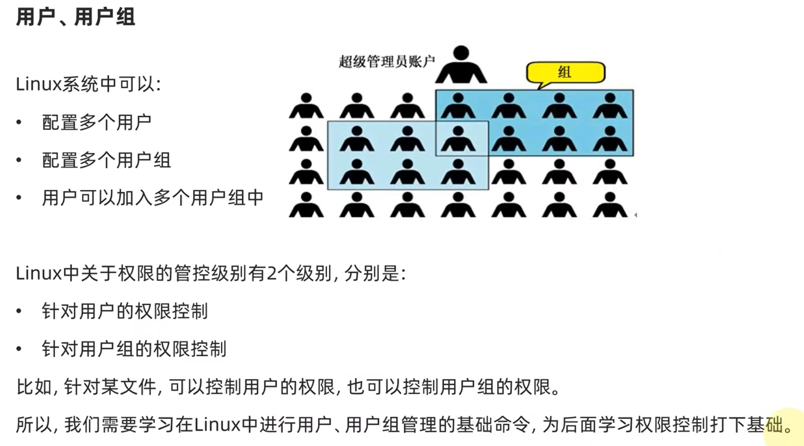
用户组管理
以下命令需root用户执行
- 创建用户组
groupadd 用户组名
- 删除用户组
groupdel 用户组名
为后续演示，我们创建一个itcast用户组: groupadd itcast
用户管理
以下命令需root用户执行
创建用户
useradd [-g -d] 用户名- 选项：-g指定用户的组，不指定-g，会创建同名组并自动加入，指定-g需要组已经存在，如已存在同名组，必须使用-g
- 选项：-d指定用户HOME路径，不指定，HOME目录默认在： /home/用户名
删除用户
userdel [-r] 用户名- 选项：-r，删除用户的HOME目录，不使用-r，删除用户时，HOME目录保留
查看用户所属组
id [用户名]- 参数:用户名,被查看的用户,如果不提供则查看自身
修改用户所属组
usermod -aG用户组 用户名，将指定用户加入指定用户组
[root@localhost ~]# useradd test2 -g itcast -d /home/test222 [root@localhost ~]# su - test2 [test2@localhost ~]$ pwd /home/test222
[root@localhost ~]# userdel test2 [root@localhost ~]# cd /home [root@localhost home]# ls cjl-linux test222
[root@localhost home]# id uid=0(root) gid=0(root) groups=0(root) context=unconfined_u:unconfined_r:unconfined_t:s0-s0:c0.c1023 [root@localhost home]# id hahahashmap-linux uid=1000(hahahashmap-linux) gid=1000(hahahashmap-linux) groups=1000(hahahashmap-linux)
[root@localhost home]# useradd test4 [root@localhost home]# id test4 uid=1001(test4) gid=1002(test4) groups=1002(test4) [root@localhost home]# usermod -aG itcast test4 [root@localhost home]# id test4 uid=1001(test4) gid=1002(test4) groups=1002(test4),1001(itcast)
查看当前系统中有哪些用户
getent passwd共有7份信息, 分别是: 用户名: 密码(x): 用户ID: 组ID: 描述信息(无用): HOME目录: 执行终端(默认bash)
查看当前系统中有哪些用户组
语法：
getent group包含3份信息，组名称：组认证(显示为×)：组ID
13.查看权限控制信息
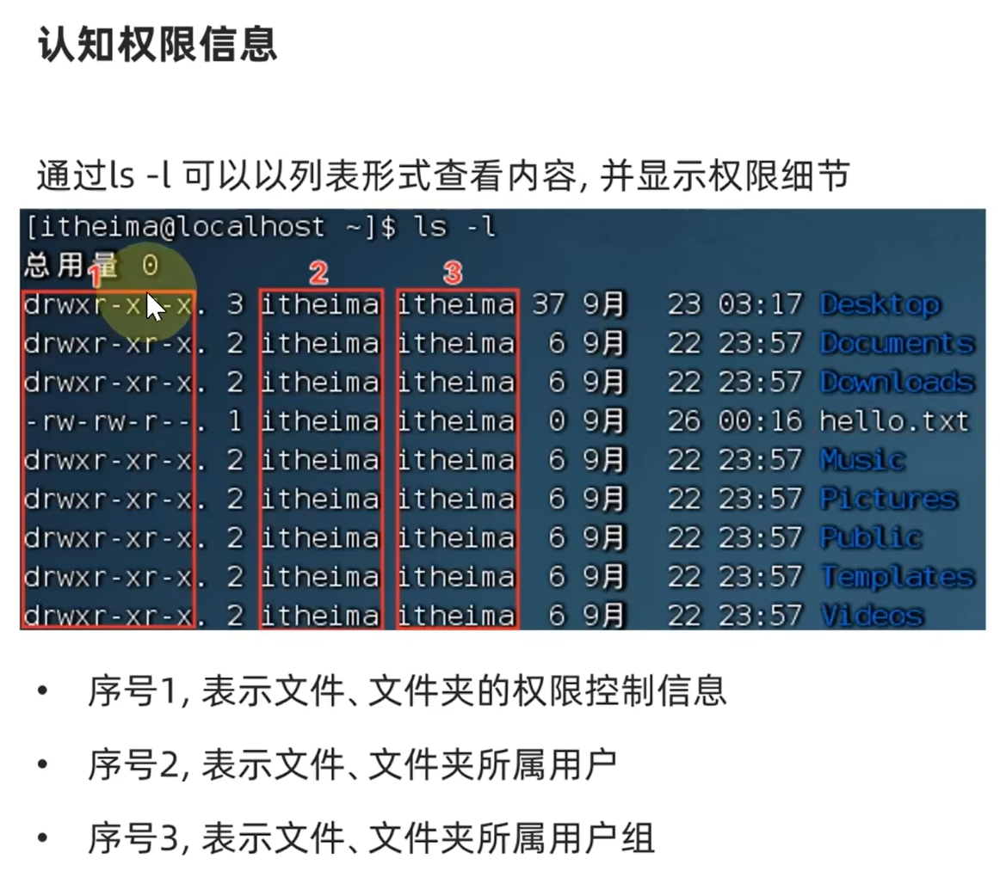
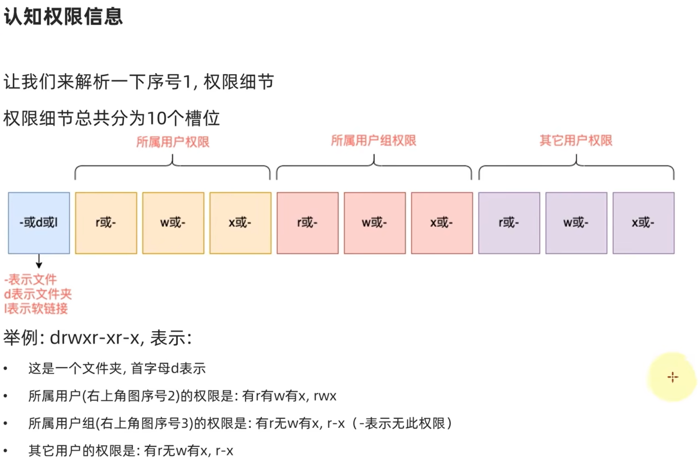
[hahahashmap-linux@localhost ~]$ ls -l total 8 drwxr-xr-x. 3 hahahashmap-linux hahahashmap-linux 34 May 29 19:18 Desktop drwxr-xr-x. 2 hahahashmap-linux hahahashmap-linux 6 May 26 07:01 Documents drwxr-xr-x. 2 hahahashmap-linux hahahashmap-linux 6 May 26 07:01 Downloads -rw-rw-r--. 1 hahahashmap-linux hahahashmap-linux 72 Jul 7 06:42 hello.txt drwxr-xr-x. 2 hahahashmap-linux hahahashmap-linux 6 May 26 07:01 Music drwxr-xr-x. 2 hahahashmap-linux hahahashmap-linux 6 May 26 07:01 Pictures drwxr-xr-x. 2 hahahashmap-linux hahahashmap-linux 6 May 26 07:01 Public drwxr-xr-x. 2 hahahashmap-linux hahahashmap-linux 6 May 26 07:01 Templates drwxrwxr-x. 4 hahahashmap-linux hahahashmap-linux 52 May 29 18:07 test01 -rw-rw-r--. 1 hahahashmap-linux hahahashmap-linux 168 Jul 7 06:16 test.txt drwxr-xr-x. 2 hahahashmap-linux hahahashmap-linux 6 May 26 07:01 Videos
rwx
那么，rwx到底代表什么呢？
- r表示读权限
- w表示写权限
- x表示执行权限
针对文件、文件夹的不同, rwx的含义有细微差别
r,针对文件可以查看文件内容
- 针对文件夹，可以查看文件夹内容，如ls命令
w,针对文件表示可以修改此文件
- 针对文件夹，可以在文件夹内：创建、删除、改名等操作
x,针对文件表示可以将文件作为程序执行
- 针对文件夹，表示可以更改工作目录到此文件夹，即cd进入
14.chmod命令修改权限信息
我们可以使用chmod命令,修改文件、文件夹的权限信息。
注意，只有文件、文件夹的所属用户或root用户可以修改。
语法： chmod [-R] 权限 文件或文件夹
- 选项：-R，对文件夹内的全部内容应用同样的操作
示例：
chmod u=rwx,g=rx,o=x hello.txt，将文件权限修改为：rwxr-x--x- 其中：u表示user所属用户权限，g表示group组权限，o表示other其它用户权限
chmod-R u=rwx,g=rx,o=x test, 将文件夹test以及文件夹内全部内容权限设置为： rwxr-x--x
权限的数字序号
除此之外，还有快捷写法：chmod 751 hello.txt
权限可以用3位数字来代表,第一位数字表示用户权限,第二位表示用户组权限,第三位表示其它用户权限。
数字的细节如下：r记为4,w记为2,x记为1，可以有：
- 0: 无任何权限， 即 ---
- 1： 仅有×权限， 即 --x
- 2: 仅有w权限 , 即 -w-
- 3: 有w和x权限, 即 -wx
- 4： 仅有r权限, 即 r--
- 5: 有r和x权限, 即 r-x
- 6: 有r和w权限, 即 rw-
- 7: 有全部权限, 即 rwx
所以751表示： rwx(7) r-x(5)--x(1)
chown命令修改所属用户
chown命令change owner
使用chown命令,可以修改文件、文件夹的所属用户和用户组
普通用户无法修改所属为其它用户或组，所以此命令只适用于root用户执行
语法: chown [-R][用户][:][用户组]文件或文件夹
- 选项，-R， 同chmod，对文件夹内全部内容应用相同规则
- 选项，用户，修改所属用户
- 选项，用户组，修改所属用户组
- ：用于分隔用户和用户组
示例：
chown root hello.txt, 将hello.txt所属用户修改为rootchown :root hello.txt,将hello.txt所属用户组修改为rootchown root:itheima hello.txt, 将hello.txt所属用户修改为root,用户组修改为itheimachown -R root test，将文件夹test的所属用户修改为root并对文件夹内全部内容应用同样规则
15.linux各类小技巧快捷键
ctrl + c 强制停止
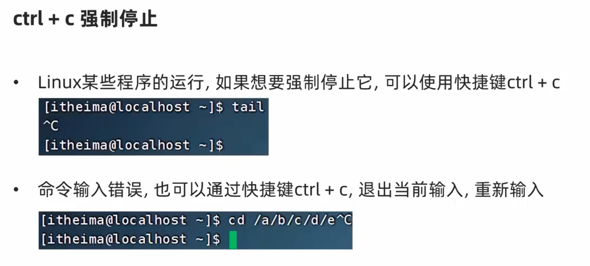
ctrl+d退出或登出
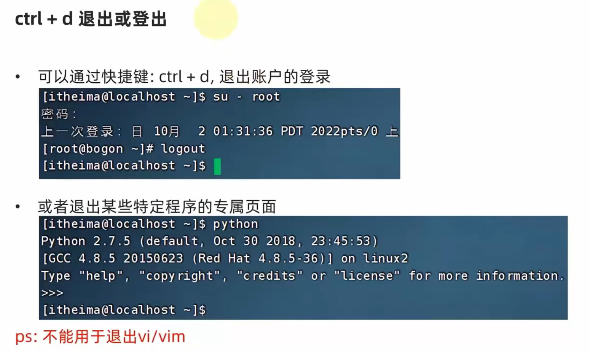
[root@localhost ~]# python
Python 2.7.5 (default, Oct 30 2018, 23:45:53)
[GCC 4.8.5 20150623 (Red Hat 4.8.5-36)] on linux2
Type "help", "copyright", "credits" or "license" for more information.
>>> print("hello world")
hello world
history查看历史命令
可以查看历史输入过的全部命令（序号越大，时间距离现在越近）
[hahahashmap-linux@localhost ~]$ history | grep ch 72 touch test.txt 131 which pwd 136 which cd 143 touch test.txt 163 echo "Hello Linux" 164 echo Hello Linux 165 echo pwd 166 echo `pwd` 168 echo "114514 1919810"> test.txt 170 echo "hello linux" > test.txt 172 echo "114514 1919810" >> test.txt 201 chmod u=rwx,g=r,o=w test.txt 211 chmod 700 test.txt 219 history | grep ch
使用！自动匹配最近执行过的命令（用!py代替python) py是第一个以py开头的命令
220 python 221 history 222 pwd 223 ls 224 ls -l 225 history [hahahashmap-linux@localhost ~]$ !py python Python 2.7.5 (default, Oct 30 2018, 23:45:53) [GCC 4.8.5 20150623 (Red Hat 4.8.5-36)] on linux2 Type "help", "copyright", "credits" or "license" for more information.
ctrl+r历史命令搜索
如果搜索到的内容是你需要的，那么：
- 回车键可以直接执行
- 键盘左右键，可以得到此命令（不执行）
会在history自下而上搜索
光标移动快捷键
- ctrl + a,跳到命令开头
- ctrl + e,跳到命令结尾
- ctrl+键盘左键,向左跳一个单词
- ctrl + 键盘右键,向右跳一个单词
ctrl+L清屏
clear也有同样效果
16.软件安装
yum进行软件安装(centOS)
Linux系统的应用商店
操作系统安装软件有许多种方式，一般分为：
下载安装包自行安装
- 如 win系统使用 exe文 件、Msi文 件等
- 如Mac系 统 使用 dmg文 件、pkg文 件 等
系统的应用商店内安装
- 如 win系 统 有 Microsoft Store商 店
- 如Mac系 统有AppStore商店
Linux系统同样支持这两种方式,我们首先,先来学习使用: Linux命令行内的"应用商店", yum命令安装软件
.rpm是linux的软件安装包格式
yum:RPM包软件管理器，用于自动化安装配置Linux软件，并可以自动解决依赖问题。
语法: yum [-y] [install | remove | search]软件名称
- 选项： -y， 自动确认，无需手动确认安装或卸载过程
- install: 安装
- remove: 卸载
- search: 搜索
yum命令需要root权限哦，可以su切换到root,或使用sudo提权。
yum命令需要联网
apt进行软件安装(Ubuntu,debian)
前面学习的各类Linux命令，都是通用的。但是软件安装，CentOS系统和Ubuntu是使用不同的包管理器。
CentOS使用yum管理器，Ubuntu使用apt管理器
通过前面学习的WSL环境，我们可以得到Ubuntu运行环境。
语法：apt [-y] [install | removesearch] 软件名称
用法和yum一致，同样需要root权限
- apt install wget, 安装wget
- apt remove wget, 移除wget
- apt search wget, 搜索wget
xxxxxxxxxx81hahahashmap@debian:$ sudo su-root2[sudo] password for hahahashmap:3root@debian:# apt install wget4Reading package lists... Done5Building dependency tree... Done6Reading state information... Done7wget is already the newest version (1.21.3-1+b2).80 upgraded, 0 newly installed, 0 to remove and 0 not upgraded.
17.systemctl控制软件启动关闭
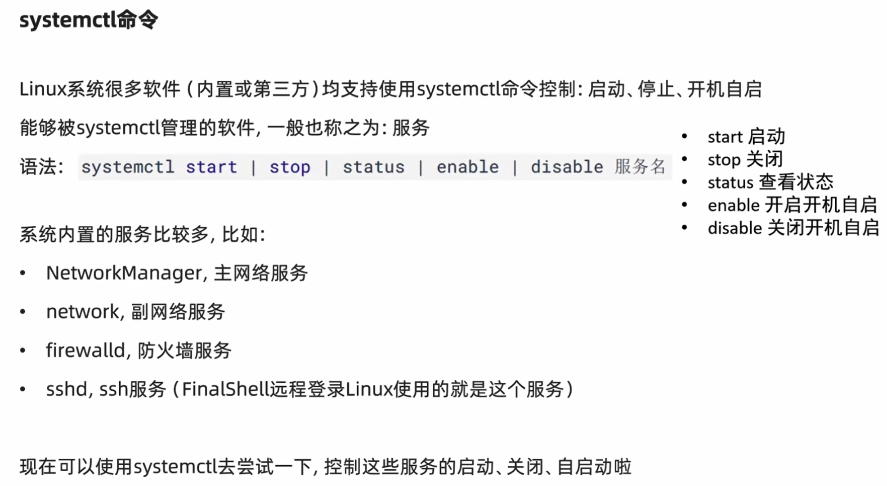
[hahahashmap-linux@localhost ~]$ systemctl status firewalld
● firewalld.service - firewalld - dynamic firewall daemon
Loaded: loaded (/usr/lib/systemd/system/firewalld.service; enabled; vendor preset: enabled)
Active: active (running) since Sat 2023-07-08 02:01:30 PDT; 1h 57min ago
Docs: man:firewalld(1)
Main PID: 6557 (firewalld)
Tasks: 2
CGroup: /system.slice/firewalld.service
└─6557 /usr/bin/python -Es /usr/sbin/firewalld --nofork --nopid
systemctl命令
除了内置的服务以外，部分第三方软件安装后也可以以systemctl进行控制。
- yum install -y ntp, 安装ntp软件
可以通过ntpd服务名，配合systemctl进行控制
- yum install -y httpd, 安装apache服务器软件
可以通过httpd服务名，配合systemctl进行控制
[root@localhost ~]# yum install -y ntp [root@localhost ~]# systemctl status ntpd ● ntpd.service - Network Time Service Loaded: loaded (/usr/lib/systemd/system/ntpd.service; disabled; vendor preset: disabled) Active: inactive (dead)
部分软件安装后没有自动集成到systemctl中，我们可以手动添加。
这部分内容在后续章节和大家详细讲解。
18.ln软链接(快捷方式)
In命令创建软连接
在系统中创建软链接,可以将文件、文件夹链接到其它位置。
类似Windows系统中的快捷方式
语法： ln -s 参数1 参数2
- -s选项，创建软连接
- 参数1：被链接的文件或文件夹
- 参数2: 要链接去的目的地
实例：
- In -s /etc/yum.conf ~/yum.conf
- In -s /etc/yum ~/yum
注：~表示HOME目录
[hahahashmap-linux@localhost etc]$ ln -s /etc/yum.conf ~/yum.conf [hahahashmap-linux@localhost etc]$ cd ~/ [hahahashmap-linux@localhost ~]$ ls -l total 8 drwxr-xr-x. 3 hahahashmap-linux hahahashmap-linux 34 May 29 19:18 Desktop drwxr-xr-x. 2 hahahashmap-linux hahahashmap-linux 6 May 26 07:01 Documents drwxr-xr-x. 2 hahahashmap-linux hahahashmap-linux 6 May 26 07:01 Downloads -rw-rw-r--. 1 hahahashmap-linux hahahashmap-linux 72 Jul 7 06:42 hello.txt drwxr-xr-x. 2 hahahashmap-linux hahahashmap-linux 6 May 26 07:01 Music drwxr-xr-x. 2 hahahashmap-linux hahahashmap-linux 6 May 26 07:01 Pictures drwxr-xr-x. 2 hahahashmap-linux hahahashmap-linux 6 May 26 07:01 Public drwxr-xr-x. 2 hahahashmap-linux hahahashmap-linux 6 May 26 07:01 Templates drwxrwxr-x. 4 hahahashmap-linux hahahashmap-linux 52 May 29 18:07 test01 -rwx------. 1 root hahahashmap-linux 57 Jul 7 22:46 test.txt drwxr-xr-x. 2 hahahashmap-linux hahahashmap-linux 6 May 26 07:01 Videos lrwxrwxrwx. 1 hahahashmap-linux hahahashmap-linux 13 Jul 8 04:22 yum.conf -> /etc/yum.conf
19.日期和时区
date 命令查看日期时间
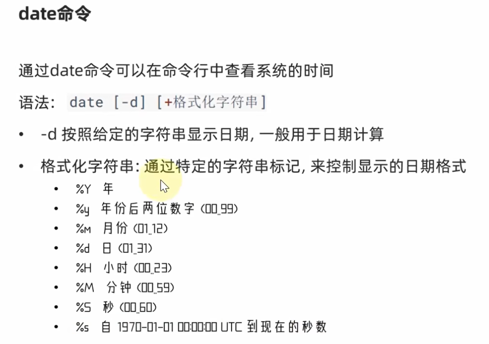
[hahahashmap-linux@localhost ~]$ date 2023年 07月 08日 星期六 04:42:29 PDT [hahahashmap-linux@localhost ~]$ date +%Y-%m-%d 2023-07-08 [hahahashmap-linux@localhost ~]$ date "+%Y-%m-%d %H:%M:%S" 2023-07-08 04:45:13 [hahahashmap-linux@localhost ~]$ date +"%Y-%m-%d %H:%M:%S" 2023-07-08 04:45:39
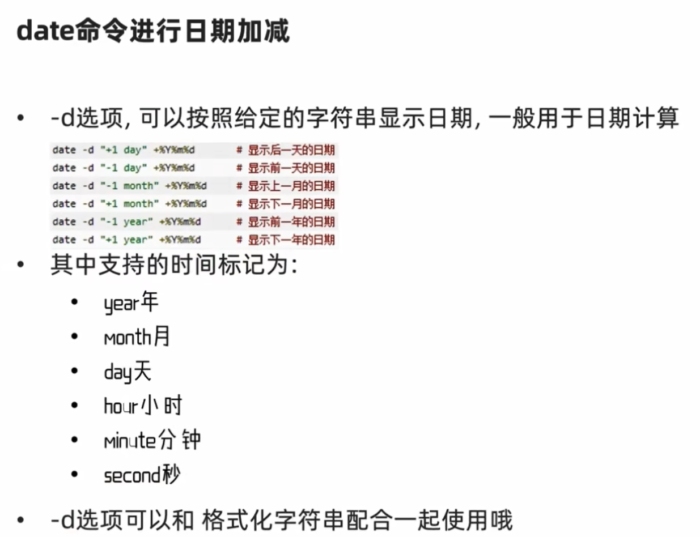
修改linux系统的时区
[hahahashmap-linux@localhost ~]$ su - 密码： 上一次登录：六 7月 8 04:38:25 PDT 2023pts/0 上 [root@localhost ~]# rm -f /etc/localtime [root@localhost ~]# ln -s /usr/share/zoneinfo/Asia/Shanghai /etc/localtime [root@localhost ~]# date Sat Jul 8 19:59:18 CST 2023
手动使用ntp进行时间同步和校准
[root@localhost ~]# ntpdate -u ntp.aliyun.com 8 Jul 20:04:29 ntpdate[14028]: adjust time server 203.107.6.88 offset 0.001643 sec
20.IP地址和主机名
IP地址
每一台联网的电脑都会有一个地址，用于和其它计算机进行通讯
IP地址主要有2个版本, V4版本和V6版本(V6很少用,课程暂不涉及)
IPv4版本的地址格式是: a.b.c.d,其中abcd表示0-255的数字,如192.168.88.101就是一个标准的IP地址
可以通过命令: ifconfig,查看本机的ip地址,如无法使用ifconfig命令,可以安装: yum -y install net-tools
xxxxxxxxxx91hahahashmap@hahahashmap的Huawei:~$ ifconfig2eth0: flags=4163<UP,BROADCAST,RUNNING,MULTICAST> mtu 15003inet 172.22.139.108 netmask 255.255.240.0 broadcast 172.22.143.2554inet6 fe80::215:5dff:febf:629b prefixlen 64 scopeid 0x20<link>5ether 00:15:5d:bf:62:9b txqueuelen 1000 (Ethernet)6RX packets 179 bytes 219537 (219.5 KB)7RX errors 0 dropped 0 overruns 0 frame 08TX packets 98 bytes 6788 (6.7 KB)9TX errors 0 dropped 0 overruns 0 carrier 0 collisions 0
可知IP地址为172.22.139.108
特殊IP地址
127.0.0.1 用于指代本机
0.0.0.0 ,特殊IP地址
- 可以用于指代本机
- 可以在端口绑定中用来确定绑定关系(后续讲解)
- 在一些IP地址限制中，表示所有IP的意思，如放行规则设置为0.0.0.0，表示允许任意IP访问
主机名
每一台电脑除了对外联络地址（IP地址)以外,也可以有一个名字，称之为主机名
无论是Windows或Linux系统,都可以给系统设置主机名
xxxxxxxxxx21hahahashmap@hahahashmap的Huawei:~$ hostname2hahahashmap的Huawei
修改主机名
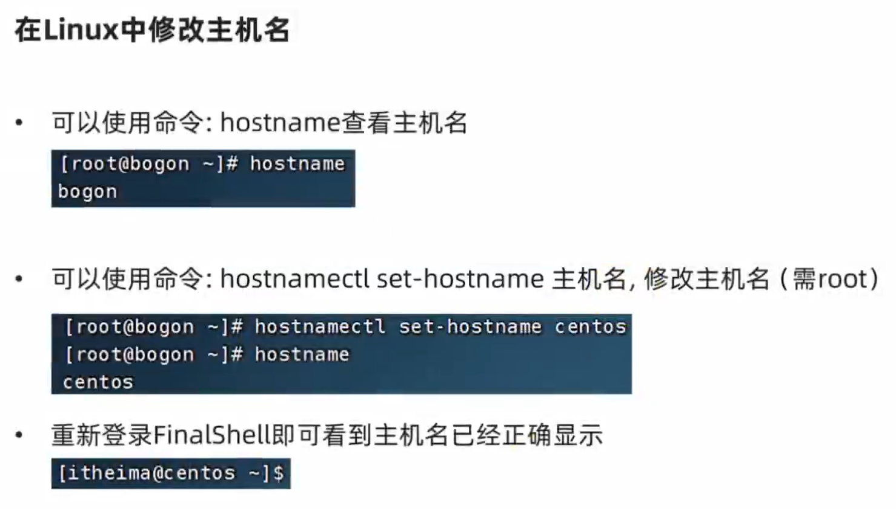
[root@localhost ~]# hostname localhost.localdomain [root@localhost ~]# hostnamectl set-hostname "hahahashmap Linux" [root@localhost ~]# hostname hahahashmaplinux
域名解析
IP地址实在是难以记忆， 有没有什么办法可以通过主机名或替代的字符地址去代替数字化的IP地址呢？
实际上，我们一直都是通过字符化的地址去访问服务器，很少指定IP地址
比如,我们在浏览器内打开: www.baidu.com,会打开百度的网址
其中，www.baidu.com，是百度的网址，我们称之为：域名
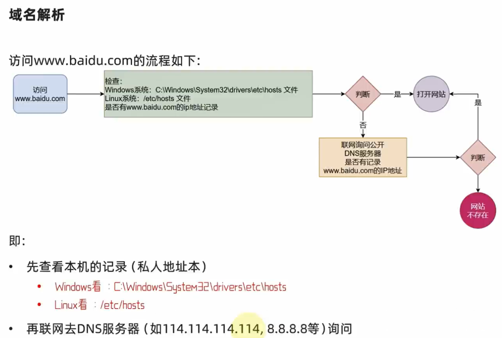
21.配置linux固定IP地址
为什么需要固定IP
当前我们虚拟机的Linux操作系统，其IP地址是通过DHCP服务获取的。
DHCP:动态获取IP地址,即每次重启设备后都会获取一次,可能导致IP地址频繁变更
原因1:办公电脑IP地址变化无所谓,但是我们要远程连接到Linux系统,如果IP地址经常变化我们就要频繁修改适配很麻烦
原因2:在刚刚我们配置了虚拟机IP地址和主机名的映射,如果IP频繁更改,我们也需要频繁更新映射关系
综上所述，我们需要IP地址固定下来，不要变化了。
在VMware Workstation中配置固定IP
配置固定IP需要2个大步骤：
- 在VMware Workstation (或Fusion)中配置IP地址网关和网段(IP地址的范围)
- 在Linux系统中手动修改配置文件,固定IP
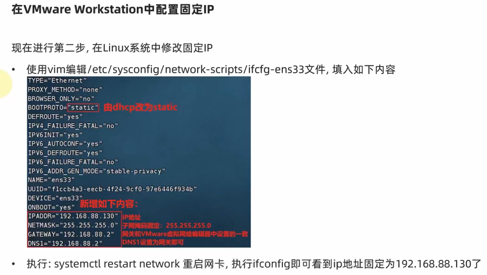
[hahahashmap-linux@hahahashmaplinux etc]$ ifconfig
ens33: flags=4163<UP,BROADCAST,RUNNING,MULTICAST> mtu 1500
inet 192.168.88.130 netmask 255.255.255.0 broadcast 192.168.88.255
21.网络请求和下载
1.掌握使用ping命令检查服务器是否可联通
可以通过ping命令,检查指定的网络服务器是否是可联通状态
语法： ping [-c num] ip或主机名
选项： -c， 检查的次数，不使用-c选项，将无限次数持续检查
参数：ip或主机名，被检查的服务器的ip地址或主机名地址
2.掌握使用wget命令下载文件
wget是非交互式的文件下载器,可以在命令行内下载网络文件
语法： wget [-b] url
选项：-b,可选，后台下载，会将日志写入到当前工作目录的wget-log
文件参数：url，下载链接
3.掌握使用curl命令发起网络请求
示例：
向cip.cc发起网络请求: curl cip.cc
向python.itheima.com发起网络请求: curl python.itheima.com(会得到网站的html代码)
通过curl下载hadoop-3.3.0安装包: curl-O http://archive.apache.org/dist/hadoop/common/hadoop3.3.0/hadoop-3.3.0.tar.gz
[hahahashmap-linux@hahahashmaplinux ~]$ curl cip.cc IP : 58.249.112.87 地址 : 中国 广东 广州 运营商 : 联通
数据二 : 广东省广州市 | 联通
数据三 : 中国广东省广州市 | 联通
URL : http://www.cip.cc/58.249.112.87
22.端口
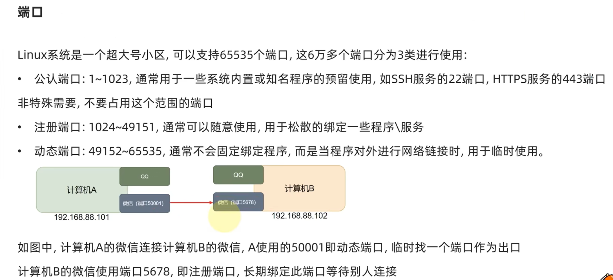
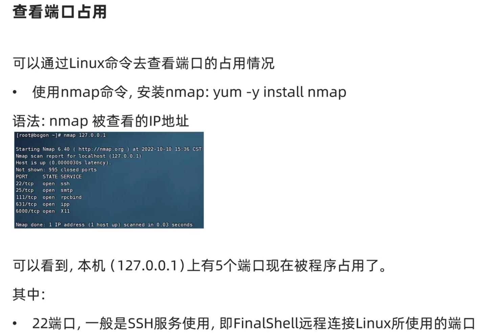
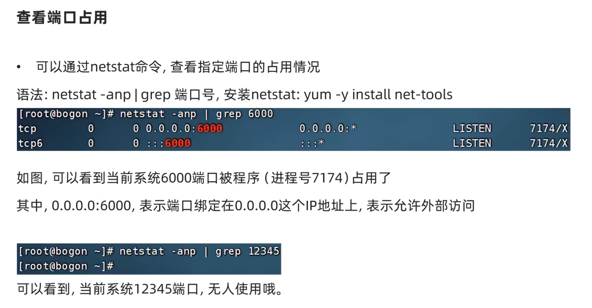
1.什么是端口？
端口是指计算机和外部交互的出入口，可以分为物理端口和虚拟端口
- 物理端口：USB、HDMI、DP、VGA、RJ45等
- 虚拟端口：操作系统和外部交互的出入口
IP只能确定计算机,通过端口才能锁定要交互的程序
2.端口的划分
- 公认端口：1~1023，用于系统内置或常用知名软件绑定使用
- 注册端口：1024~49151，用于松散绑定使用（用户自定义）
- 动态端口：49152~65535，用于临时使用（多用于出口)
3.查看端口占用
nmap IP地址，查看指定IP的对外暴露端口`netstat-anp | grep 端口号,查看本机指定端口号的占用情况
23.进程
程序运行在操作系统中,是被操作系统所管理的。
为管理运行的程序，每一个程序在运行的时候，便被操作系统注册为系统中的一个：进程
并会为每一个进程都分配一个独有的:进程ID(进程号)
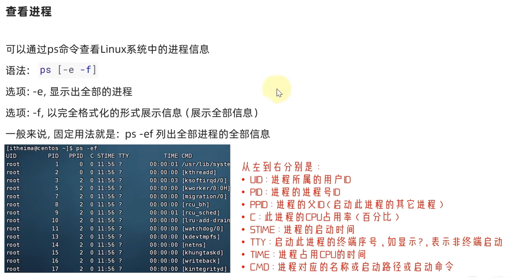
关闭进程
在Windows系统中,可以通过任务管理器选择进程后,点击结束进程从而关闭它。
同样，在Linux中，可以通过kill命令关闭进程。
语法: kill [-9] 进程ID
选项：-9，表示强制关闭进程。不使用此选项会向进程发送信号要求其关闭，但是否关闭看进程自身的处理机制。
命令关闭:
窗口1:
[hahahashmap-linux@hahahashmaplinux ~]$ tail 已终止
窗口2:
[hahahashmap-linux@hahahashmaplinux ~]$ ps -ef | grep tail hahahashmap-lin+ 11617 9258 0 22:03 pts/0 00:00:00 tail hahahashmap-lin+ 11619 11517 0 22:03 pts/1 00:00:00 grep --color=auto tail [hahahashmap-linux@hahahashmaplinux ~]$ kill 11617
强制关闭:
窗口1:
[hahahashmap-linux@hahahashmaplinux ~]$ tail 已杀死
窗口2:
[hahahashmap-linux@hahahashmaplinux ~]$ ps -ef | grep tail hahahashmap-lin+ 11662 9258 0 22:05 pts/0 00:00:00 tail hahahashmap-lin+ 11665 11517 0 22:05 pts/1 00:00:00 grep --color=auto tail [hahahashmap-linux@hahahashmaplinux ~]$ kill -9 11662
24.主机状态监控
top查看系统资源占用
可以通过top命令查看CPU、内存使用情况,类似Windows的任务管理器
默认每5秒刷新一次,语法：直接输入top即可,按q或ctrl + c退出
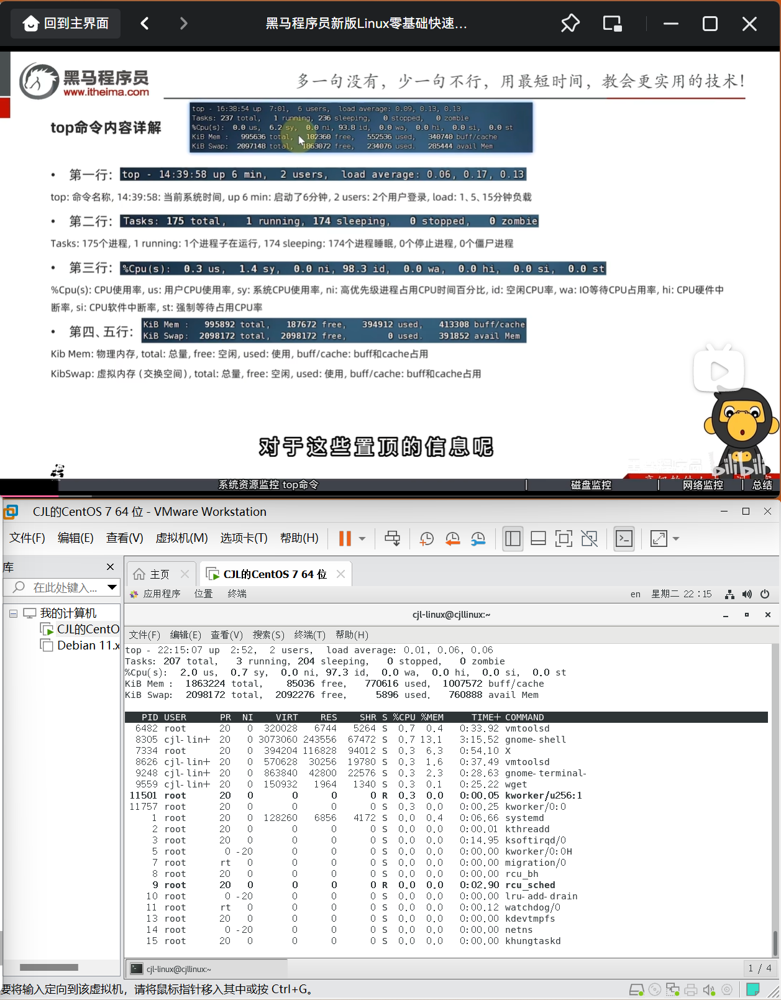
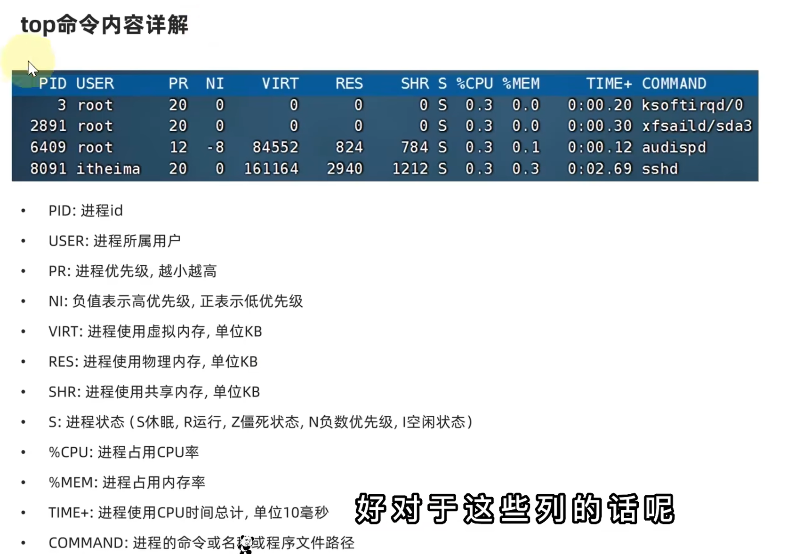
top命令选项
top命令也支持选项：
选项 功能
-p 只显示某个进程的信息
-d 设置刷新时间，默认是5s
-c 显示产生进程的完整命令,默认是进程名
-n 指定刷新次数,比如top -n 3,刷新输出3次后退出
-b 以非交互非全屏模式运行，以批次的方式执行top，一般配合-n指定输出几次统计信息，将输出重定向到指定文件,比如 top -b -n 3 > /tmp/top.tmp
-i 不显示任何闲置（idle)或无用（zombie) 的进程
-u 查找特定用户启动的进程
top交互式选项
当top以交互式运行(非-b选项启动),可以用以下交互式命令进行控制
按键 功能
h键 按下h键，会显示帮助画面
c键 按下c键,会显示产生进程的完整命令,等同于-c参数,再次按下c键,变为默认显示
f键 按下f键,可以选择需要展示的项目
M键 按下M键,根据驻留内存大小(RES)排序
P键 按下P键，根据CPU使用百分比大小进行排序
T键 按下T键，根据时间/累计时间进行排序
E键 按下E键，切换顶部内存显示单位
e键 按下e键，切换进程内存显示单位
l键 按下l键，切换显示平均负载和启动时间信息。
i键 按下i键,不显示闲置或无用的进程,等同于-i参数，再次按下,变为默认显示
t键 按下t键，切换显示CPU状态信息m键按下m键，切换显示内存信息
df磁盘信息监控
使用df命令,可以查看硬盘的使用情况
语法： df [-h]
选项： -h,以更加人性化的单位显示
[hahahashmap-linux@hahahashmaplinux ~]$ df -h 文件系统 容量 已用 可用 已用% 挂载点 /dev/sda3 38G 6.0G 32G 16% / devtmpfs 895M 0 895M 0% /dev tmpfs 910M 0 910M 0% /dev/shm tmpfs 910M 11M 900M 2% /run tmpfs 910M 0 910M 0% /sys/fs/cgroup /dev/sda1 297M 157M 140M 53% /boot tmpfs 182M 32K 182M 1% /run/user/1000
磁盘信息监控
可以使用iostat查看CPU、磁盘的相关信息
语法:iostat [-x] [num1] [num2]
选项： -x， 显示更多信息
num1:数字,刷新间隔,
num2:数字,刷新几次
(后面的图片都存在云端了，感谢黑马程序员😄)
iostat命令
查看CPU、磁盘的相关信息


sar命令
查看网络统计

25.环境变量
在讲解which命令的时候,我们知道使用的一系列命令其实本质上就是一个个的可执行程序。
比如，cd命令的本体就是: /usr/bin/cd这个程序文件。
我们是否会有疑问，为何无论当前工作目录在哪里，都能执行: /usr/bin/cd这个程序呢？
环境变量是操作系统（Windows、Linux、Mac）在运行的时候，记录的一些关键性信息，用以辅助系统运行。
在Linux系统中执行：env命令即可查看当前系统中记录的环境变量
环境变量是一种KeyValue型结构
环境变量：PATH
在前面提出的问题中，我们说无论当前工作目录是什么，都能执行/usr/bin/cd这个程序，这个就是借助环境变量中：PATH这个项目的值来做到的。
[hahahashmap-linux@hahahashmaplinux ~]$ env | grep PATH PATH=/usr/local/bin:/usr/local/sbin:/usr/bin:/usr/sbin:/bin:/sbin:/home/hahahashmap-linux/.local/bin:/home/hahahashmap-linux/bin WINDOWPATH=1
当执行任何命令，都会按照顺序，从上述路径中搜索要执行的程序的本体
比如执行cd命令，就从第三个目录/usr/bin中搜索到了cd命令，并执行
$符号
可以取出指定的环境变量的值
语法：$变量名
示例：
echo $PATH，输出PATH环境变量的值
echo ${PATH}ABC，输出PATH环境变量的值以及ABC
如果变量名和其它内容混淆在一起，可以使用${}
[hahahashmap-linux@hahahashmaplinux ~]$ echo $PATH /usr/local/bin:/usr/local/sbin:/usr/bin:/usr/sbin:/bin:/sbin:/home/hahahashmap-linux/.local/bin:/home/hahahashmap-linux/bin
自行设置环境变量
PATH记录了执行程序的搜索路径
可以将自定义路径加入PATH内，实现自定义命令在任意地方均可执行的效果
临时设置：export 变量名=变量值
[hahahashmap-linux@hahahashmaplinux ~]$ export MYNAME=hahahashmap [hahahashmap-linux@hahahashmaplinux ~]$ echo "$MYNAME is handsome" hahahashmap is handsome
重启终端窗口后，临时设置的环境变量就不再可用
永久设置：
针对用户，设置用户HOME目录内：
~/.bashrc文件# .bashrc # Source global definitions if [ -f /etc/bashrc ]; then . /etc/bashrc fi# Uncomment the following line if you don't like systemctl's auto-paging feature: # export SYSTEMD_PAGER=
# User specific aliases and functions export MYNAME=hahahashmap
然后用
source .bashrc使更改生效针对全局，设置
/etc/profile并通过语法：source 配置文件，进行立刻生效，或重新登录FinalShell生效
自定义环境变量PATH
环境变量PATH这个项目里面记录了系统执行命令的搜索路径。
这些搜索路径我们也可以自行添加到PATH中去。
测试：
•在当前HOME目录内创建文件夹，myenv，在文件夹内创建文件mkhaha
•通过vim编辑器，在mkhaha文件内填入：echo 哈哈哈哈哈
完成上述操作后，随意切换工作目录，执行mkhaha命令尝试一下，会发现无法执行
•修改PATH的值
临时修改PATH：export PATH=$PATH:/home/itheima/myenv，再次执行mkhaha，无论在哪里都能执行了
或将export PATH=$PATH:/home/itheima/myenv，填入用户环境变量文件或系统环境变量文件中去
26.上传和下载
我们可以通过FinalShell工具，方便地和虚拟机进行数据交换。
在FinalShell软件的下方窗体中，提供了Linux的文件系统视图，可以方便的：
•浏览文件系统，找到合适的文件，右键点击下载，即可传输到本地电脑
•浏览文件系统，找到合适的目录，将本地电脑的文件拓展进入，即可方便的上传数据到Linux中
rz,sz命令
当然，除了通过FinalShell的下方窗体进行文件的传输以外，也可以通过rz、sz命令进行文件传输。
rz、sz命令需要安装，可以通过：yum -y install lrzsz，即可安装。
rz命令，进行上传，语法：直接输入rz即可
sz命令进行下载，语法：sz 要下载的文件
27.压缩文件
市面上有非常多的压缩格式
•zip格式：Linux、Windows、MacOS，常用
•7zip：Windows系统常用
•rar：Windows系统常用
•tar：Linux、MacOS常用
•gzip：Linux、MacOS常用
在Windows系统中常用的软件如：winrar、bandizip等软件，都支持各类常见的压缩格式，这里不多做讨论。
我们现在要学习，如何在Linux系统中操作：tar、gzip、zip这三种压缩格式
完成文件的压缩、解压操作
tar命令
Linux和Mac系统常用有2种压缩格式，后缀名分别是：
•.tar，称之为tarball，归档文件，即简单的将文件组装到一个.tar的文件内，并没有太多文件体积的减少，仅仅是简单的封装
•.gz，也常见为.tar.gz，gzip格式压缩文件，即使用gzip压缩算法将文件压缩到一个文件内，可以极大的减少压缩后的体积
针对这两种格式，使用tar命令均可以进行压缩和解压缩的操作
语法：
•-c，(create)创建压缩文件，用于压缩模式
•-v，显示压缩、解压过程，用于查看进度
•-x，解压模式
•-f，要创建的文件，或要解压的文件，-f选项必须在所有选项中位置处于最后一个
•-z，gzip模式，不使用-z就是普通的tarball格式
•-C，选择解压的目的地，用于解压模式
压缩
tar的常用组合为：
•tar -cvf test.tar 1.txt 2.txt 3.txt
将1.txt 2.txt 3.txt 压缩到test.tar文件内
•tar -zcvf test.tar.gz 1.txt 2.txt 3.txt
将1.txt 2.txt 3.txt 压缩到test.tar.gz文件内，使用gzip模式
注意：
•-z选项如果使用的话，一般处于选项位第一个
•-f选项，必须在选项位最后一个
解压
常用的tar解压组合有
•tar -xvf test.tar
解压test.tar，将文件解压至当前目录
•tar -xvf test.tar -C /home/itheima
解压test.tar.gz，将文件解压至指定目录（/home/itheima）
•tar -zxvf test.tar.gz -C /home/itheima
以Gzip模式解压test.tar.gz，将文件解压至指定目录（/home/itheima）
注意：
•-f选项，必须在选项组合体的最后一位
•-z选项，建议在开头位置
•-C选项单独使用，和解压所需的其它参数分开
zip命令压缩
可以使用zip命令，压缩文件为zip压缩包
语法：
•-r，被压缩的包含文件夹的时候，需要使用-r选项，和rm、cp等命令的-r效果一致
示例：
•zip test.zip a.txt b.txt c.txt
将a.txt b.txt c.txt 压缩到test.zip文件内
•zip -r test.zip test itheima a.txt
将test、itheima两个文件夹和a.txt文件，压缩到test.zip文件内
unzip命令解压
使用unzip命令，可以方便的解压zip压缩包
语法：
•-d，指定要解压去的位置，同tar的-C选项
•参数，被解压的zip压缩包文件
示例：
•unzip test.zip，将test.zip解压到当前目录
•unzip test.zip -d /home/itheima，将test.zip解压到指定文件夹内（/home/itheima）
注意:同名内容会被替换